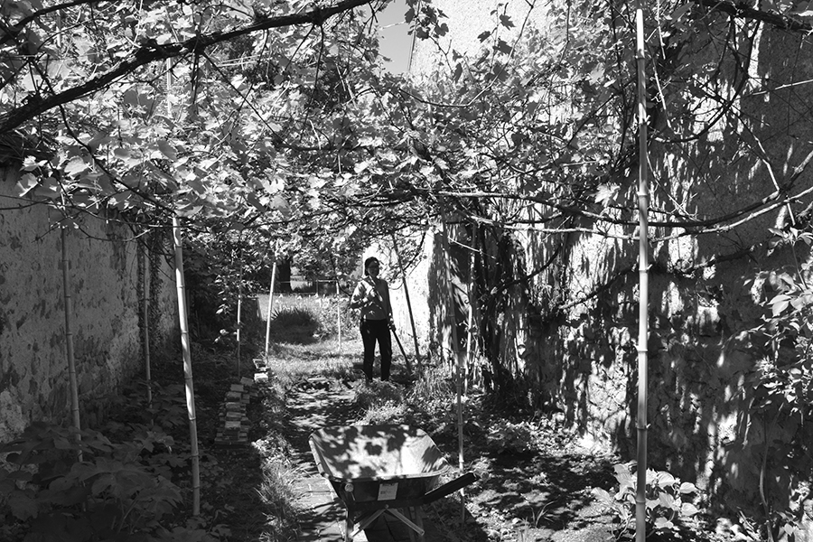
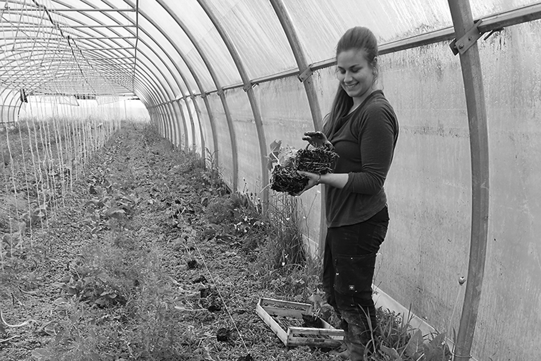
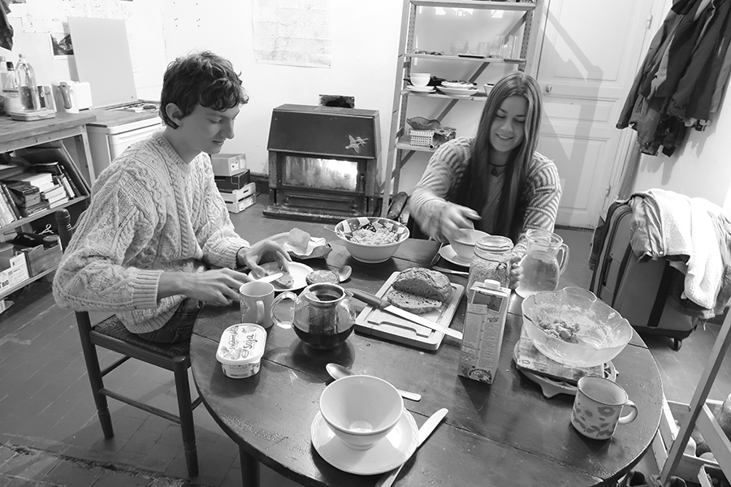
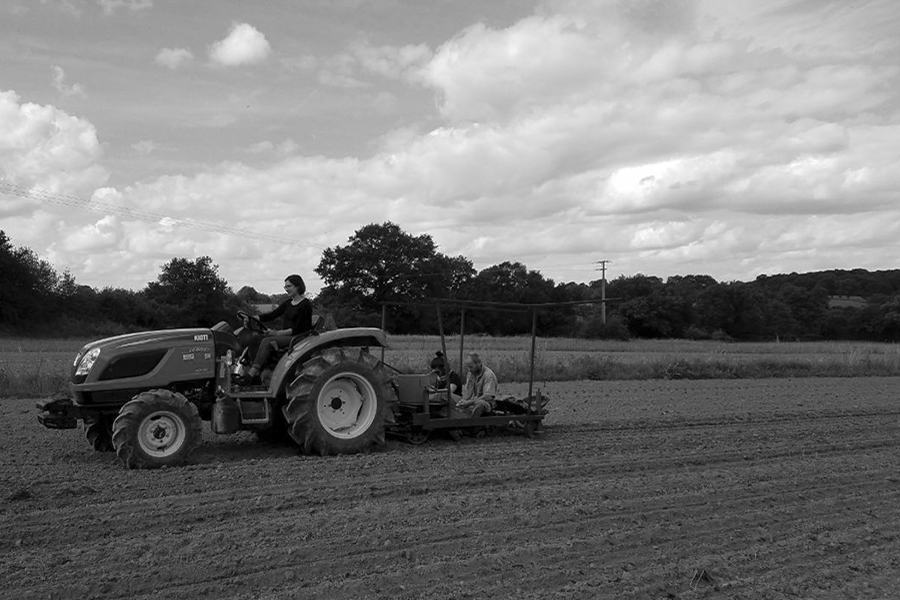

Ferme de la Mhotte
un lieu pour la mise en culture du commun
La Ferme de la Mhotte acceuille 3 jeunes allemands dans le cadre du VEFA (Volontariat d’Echange Franco Allemand), pour une durée d’un an. Les écovolontaires font parti du collectif et aident chaque structures la semaine avec la possibilité, en parallèle, de concrétiser leurs propres projets en relation avec la Ferme.
Les activités vont de la récolte des légumes jusqu’à l’aide lors des concerts à l’Échoppe, en passant par la préparation des repas communs ! Les écovolontaires sont donc au cœur de la ferme !
Plus d’informations sur le site du VEFA :
www.ve-fa.org